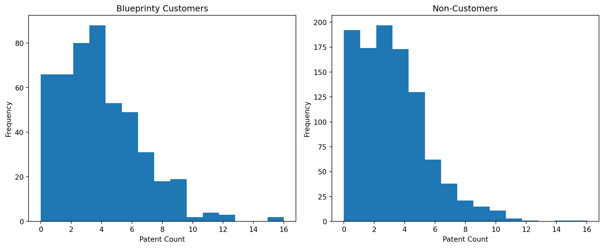
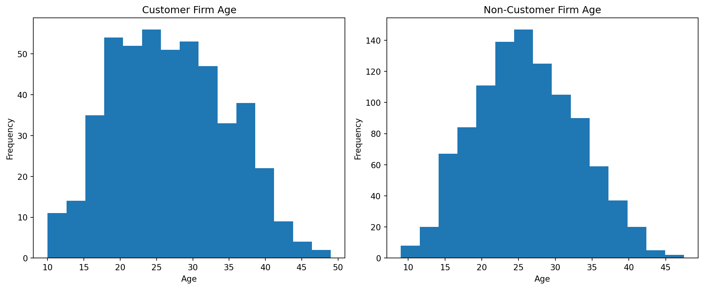

Poisson Regression and Maximum Likelihood Estimation
A Case Study of Blueprinty’s Software and Patent Awards
Author
Yizhen Shi
Published
May 17, 2026
Introduction
Blueprinty is a software company that develops tools for engineering firms submitting patent applications to the U.S. Patent Office. The company claims that firms using its software are more successful in obtaining patent approvals.
To investigate this claim, Blueprinty collected observational data on 1,500 mature engineering firms. The dataset includes the number of patents awarded over the last five years, regional location, firm age, and whether the firm uses Blueprinty’s software.
Because the outcome variable is a count of patents, Poisson regression is a natural modeling choice. In this post, I estimate a Poisson regression model using Maximum Likelihood Estimation (MLE), derive the likelihood function manually, and compare the custom implementation to Python’s built-in generalized linear modeling tools.
One important challenge is that Blueprinty customers are not randomly selected. Firms choosing to purchase the software may differ systematically from non-customers in ways that also affect patent outcomes. As a result, differences in patent counts cannot automatically be interpreted as causal effects of the software itself.
Exploring the Data
Loading the Data
import pandas as pdimport numpy as npimport matplotlib.pyplot as pltimport statsmodels.api as smfrom scipy.optimize import minimizefrom scipy.special import gammalndf = pd.read_csv("blueprinty.csv")df.head()
patents
region
age
iscustomer
0
0
Midwest
32.5
0
1
3
Southwest
37.5
0
2
4
Northwest
27.0
1
3
3
Northeast
24.5
0
4
3
Southwest
37.0
0
Comparing Patent Counts

The distributions of patent counts are right-skewed, which is common for count data. Blueprinty customers appear to have somewhat higher patent counts on average relative to non-customers.
The raw averages suggest that Blueprinty customers receive more patents than non-customers. However, these differences may also reflect differences in firm characteristics such as age or regional location.
Comparing Regions
pd.crosstab(df["region"], df["iscustomer"])
iscustomer
0
1
region
Midwest
187
37
Northeast
273
328
Northwest
158
29
South
156
35
Southwest
245
52
Customer and non-customer firms are distributed differently across regions. This matters because regional differences may independently affect innovation and patent activity.
Comparing Firm Age

Customer firms also appear to differ in age from non-customers. Since older firms may have more experience and resources, controlling for age is important in the regression analysis.
A Simple Poisson Model via Maximum Likelihood
The number of patents awarded is a non-negative count variable, making the Poisson distribution a natural starting point for modeling the data. Unlike the Normal distribution, the Poisson distribution is specifically designed for integer-valued count outcomes.
The probability mass function for a Poisson random variable is:
The log-likelihood function is concave and reaches its maximum at the MLE estimate of \(\lambda\). Visually, the peak of the curve identifies the parameter value that best fits the observed data.
The numerical MLE estimate is nearly identical to the sample mean, which is expected because the Poisson MLE for \(\lambda\) equals the sample average.
Poisson Regression
The simple Poisson model assumes that every firm shares the same expected patent rate. A Poisson regression relaxes this assumption by allowing the expected patent count to vary across firms as a function of observable characteristics.
The Poisson regression model is:
\[
Y_i \sim \text{Poisson}(\lambda_i)
\]
\[
\lambda_i = \exp(X_i'\beta)
\]
The exponential function ensures that the expected patent count is always positive.
The model includes firm age, age squared, customer status, and regional indicators. Age squared is included because the relationship between firm age and patent production may not be perfectly linear.
Coding the Poisson Regression Log-Likelihood
def poisson_reg_ll(beta, y, X): eta = X.to_numpy() @ beta mu = np.exp(eta) ll = np.sum( y.to_numpy()*np.log(mu)- mu- gammaln(y.to_numpy() +1) )return ll
Estimating the Model
def neg_poisson_reg_ll(beta, y, X):return-poisson_reg_ll(beta, y, X)result = minimize( neg_poisson_reg_ll, x0=np.zeros(X.shape[1]), args=(y, X))result.x
/var/folders/g4/6_fvz6kx06l5s3rkzxvjbs0c0000gn/T/ipykernel_75100/2863719832.py:4: RuntimeWarning: overflow encountered in exp
mu = np.exp(eta)
/var/folders/g4/6_fvz6kx06l5s3rkzxvjbs0c0000gn/T/ipykernel_75100/2863719832.py:7: RuntimeWarning: invalid value encountered in multiply
y.to_numpy()*np.log(mu)
/var/folders/g4/6_fvz6kx06l5s3rkzxvjbs0c0000gn/T/ipykernel_75100/2863719832.py:7: RuntimeWarning: invalid value encountered in subtract
y.to_numpy()*np.log(mu)
/Library/Frameworks/Python.framework/Versions/3.14/lib/python3.14/site-packages/numpy/_core/fromnumeric.py:83: RuntimeWarning: overflow encountered in reduce
return ufunc.reduce(obj, axis, dtype, out, **passkwargs)
/var/folders/g4/6_fvz6kx06l5s3rkzxvjbs0c0000gn/T/ipykernel_75100/2863719832.py:4: RuntimeWarning: overflow encountered in exp
mu = np.exp(eta)
/var/folders/g4/6_fvz6kx06l5s3rkzxvjbs0c0000gn/T/ipykernel_75100/2863719832.py:7: RuntimeWarning: invalid value encountered in multiply
y.to_numpy()*np.log(mu)
/var/folders/g4/6_fvz6kx06l5s3rkzxvjbs0c0000gn/T/ipykernel_75100/2863719832.py:7: RuntimeWarning: invalid value encountered in subtract
y.to_numpy()*np.log(mu)
/Library/Frameworks/Python.framework/Versions/3.14/lib/python3.14/site-packages/numpy/_core/fromnumeric.py:83: RuntimeWarning: overflow encountered in reduce
return ufunc.reduce(obj, axis, dtype, out, **passkwargs)
/var/folders/g4/6_fvz6kx06l5s3rkzxvjbs0c0000gn/T/ipykernel_75100/2863719832.py:4: RuntimeWarning: overflow encountered in exp
mu = np.exp(eta)
/var/folders/g4/6_fvz6kx06l5s3rkzxvjbs0c0000gn/T/ipykernel_75100/2863719832.py:7: RuntimeWarning: invalid value encountered in multiply
y.to_numpy()*np.log(mu)
/var/folders/g4/6_fvz6kx06l5s3rkzxvjbs0c0000gn/T/ipykernel_75100/2863719832.py:7: RuntimeWarning: invalid value encountered in subtract
y.to_numpy()*np.log(mu)
The coefficient estimates from the manually implemented MLE closely match the estimates from statsmodels’ GLM function, confirming that the custom likelihood implementation is working correctly.
The customer coefficient is positive, suggesting that Blueprinty customers tend to receive more patents after controlling for firm age and regional differences.
The Effect of Blueprinty’s Software
The coefficients from a Poisson regression are multiplicative rather than additive, so interpreting the effect of Blueprinty directly from the coefficient table can be difficult. To obtain a more intuitive estimate, I construct two counterfactual datasets.
The first dataset assumes every firm is a non-customer, while the second assumes every firm is a customer.
/Library/Frameworks/Python.framework/Versions/3.14/lib/python3.14/site-packages/pandas/core/arraylike.py:402: RuntimeWarning: overflow encountered in exp
result = getattr(ufunc, method)(*inputs, **kwargs)
nan
The estimated average treatment effect suggests that Blueprinty customers are expected to receive more patents on average relative to otherwise similar firms that do not use the software.
However, this analysis remains observational rather than experimental. Although the regression controls for observed characteristics such as age and region, unobserved differences between firms may still bias the estimated relationship between Blueprinty usage and patent outcomes.
Conclusion
This analysis used Maximum Likelihood Estimation to estimate both a simple Poisson model and a Poisson regression model for patent counts. The manually coded MLE closely matched the estimates produced by Python’s built-in GLM implementation, confirming that the likelihood function was implemented correctly.
The results provide evidence consistent with Blueprinty’s claim that its software is associated with increased patent approvals. Firms using the software tend to have higher expected patent counts even after controlling for firm age and regional differences.
At the same time, the analysis should not be interpreted as definitive causal proof. Because Blueprinty customers are not randomly assigned, unobserved differences between firms may still influence the results. Nevertheless, the exercise demonstrates how Poisson regression and maximum likelihood estimation can be used to model count data in an applied business setting.